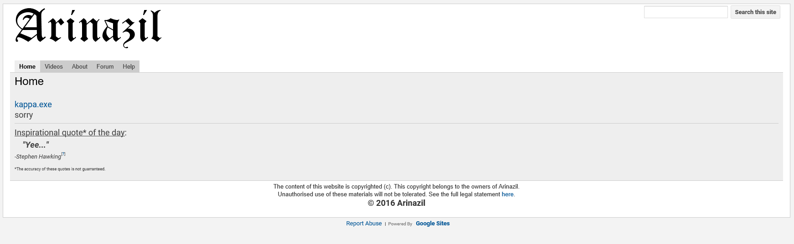
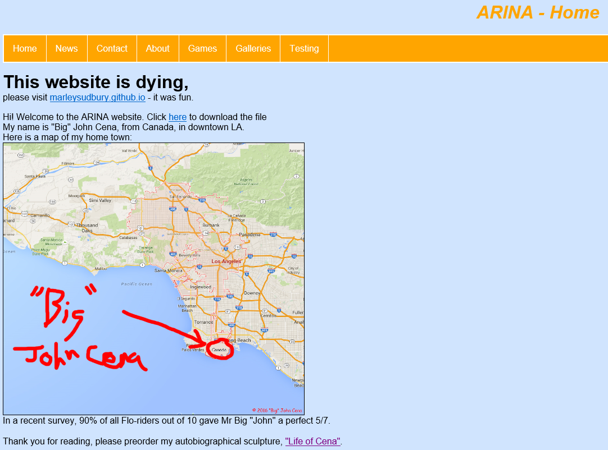

Arinazil - 04/06/2016
The domain of my first website, arinazil.co.uk is about to expire. It's been a pretty cool ride, over the last 2 years, even though I can't remember anything terribly important happening there. Let's take a trip down memory lane.
Well this might be quite difficult, as the first iteration of the site was hosted by some shitty free hosting company, which managed to somehow hijack my domain for a while. I tried to login but it didn't work, which I guess means they finally let me go. Anyhow, suffice to say that it was a badly designed website, and contained many garish orange and yellow tones, although the font was quite nice. The original purpose for the website was to accompany a Minecraft server, which it did for all of about 10 minutes. Accordingly, this version of the website was the closest to this brief. You may be interested in the origin of the name. Arinazil is the conjunction of two seperate names obtained from a random name generator, because I have 0% creativity of my own. It was originally the name of a game I made, and then my Minecraft server. I then decided to make it a website. I registered the domain, and then promptly reallised the name contained within it a fairly inappropriate term. Oops.
The next generation of the website is much easier to view (both physically and aesthetically), as it is still hosted by sites.google.com, so here it is. Initially this website followed a similar path to the first, but eventually I started to make it a more personal website. At some point, my friends discovered my website, which had the unfortunate (in retrospect) side-effect of causing me to make the website into a joke. The answer to 'Is this memes?' became a tragic yes, although I still think the quotes were quite funny, and I even made a spreadsheet for them (the sign of a true enthusiast). The forum doesn't work any more. I don't know why, I never turned it off, but I guess it got bored of having aprox 0.0000 users per year. This website was, still, far better that it's predecessor, but it still had the problem of a lack of real customization.
The current edition of the website, hosted on github.com (like this one) is available here. You will see, I'm sure, that this website is just as unfortunatly (un)funny. The difference is, of course, that this version was hand crafted by me. Shoddy though my early foray into front-end web development may have been, I am still incredibly more proud of it that some of the earlier stuff that I just made through some free little 'website maker'. I definatley recommend this type of project to any one with enough (in my case a lot) free time, even if it is as externally insignificantly as Arinazil.
A P.S. about the whole 'Big' John Cena thing. I did it when I realised that the website had no potential, which was the same time I decided not to renew the domain name (for that reason as well as the fact that I am, personally, quite poor). As we all know, random == funny. It's the golden rule of the internet. Ahh, never mind. The home page never had anything terribly interesting on it anyway, as I recall.